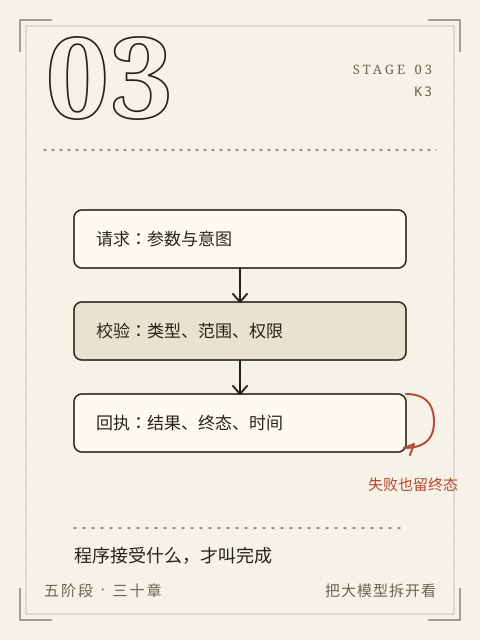

阶段 3 / K3
S3 能实现
让失败留下回执。
从空环境运行真实文档助手，记录检索、模型请求、工具回执与失败。
原理课上的小矩阵，现在要变成能读文件、发请求、连模型、取资料、调工具的程序。它们会坏：路径不对、编码不对、权限不够、服务超时、模型返回一段不合格式的话。工程能力不是一次跑通，而是知道坏在哪一层。
七章从空目录开始，最后装成一个能交付的资料助手。每一章都留下可检查的文件和失败记录；没有真实模型时，就如实报告不可用，不拿预置答案冒充运行结果。
本阶段章节
- C11从空目录运行第一段程序
从空目录、一个文本文件开始，写出能读材料、报错误、输出 JSON 的第一段程序。
- C12请求、响应和数据约定
用本地服务看清请求、响应、状态码、超时和“不知道对方有没有执行”。
- C13接上真实模型
把同一套请求结构接到真实模型，保留输入、输出、引用和不可用状态。
- C14把自己的文档变成可追溯片段
把文档切成带版本、哈希、权限和字符位置的可追溯片段。
- C15先找到资料，再组织答案
对照词项检索与 embedding 检索，检查取回的片段是否真的支持答案。
- C16让工具真的执行，并知道何时停
让模型提出工具请求，由程序校验、执行并回执，同时知道何时必须停。
- C17组装资料助手第一版
把文档、权限、检索、模型、工具和引用装成第一版可交付的资料助手。